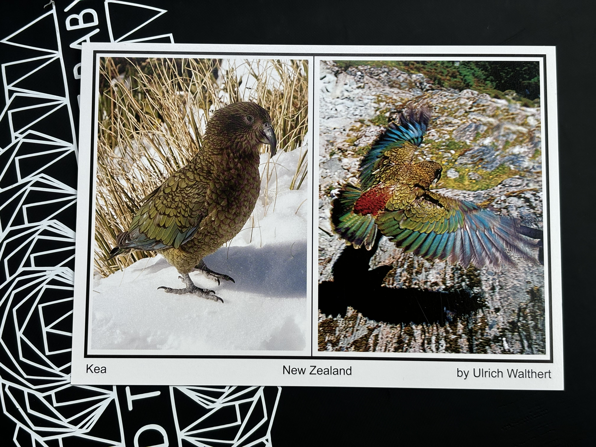

??th of ?? 20??
Great question! I've never mentioned on my blog anywhere the term and until I went looking into the surrounding hobby of Philately I'd never heard it either. However I have now been using it for !TIMELENGTH and am keen to write up a little piece on what it is, how it works and why I love participating.
